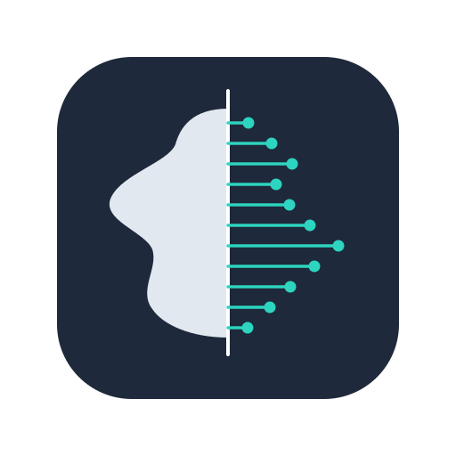
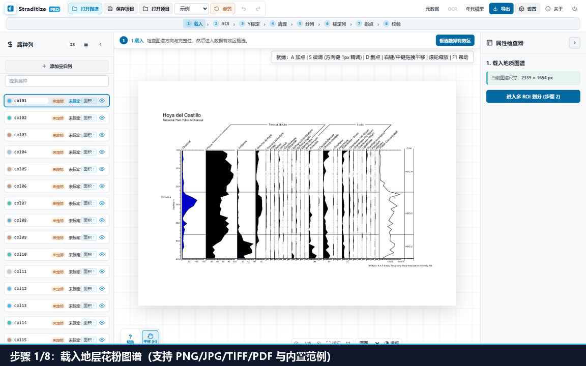

地质剖面与花粉图谱
•
多列并发解译
把论文里的地层图
还原成可计算的数据矩阵
通用折线工具按单曲线采点：每个属种要单独建数据集、单独标定，拼表时深度对不齐，矩阵里出现伪空值（Pseudo-NA）。本软件把 8 步串成一条流水线：Radon 矫正扫描倾角、自动去线、PP-OCRv6 识别拉丁学名、Y 轴与 X 轴各做一次两点物理标定、等深截交生成共识层位、最后按 Σ% 门禁校验并导出矩阵。


通用折线工具按单曲线采点：每个属种要单独建数据集、单独标定，拼表时深度对不齐，矩阵里出现伪空值（Pseudo-NA）。本软件把 8 步串成一条流水线：Radon 矫正扫描倾角、自动去线、PP-OCRv6 识别拉丁学名、Y 轴与 X 轴各做一次两点物理标定、等深截交生成共识层位、最后按 Σ% 门禁校验并导出矩阵。

普通二维 X-Y 曲线工具按单图单曲线处理，与多列地层图谱的结构不匹配
一份剖面常包含 30-80 个花粉属种、碳屑、同位素等多条曲线并列。通用工具按单图设计，需重复新建几十个数据集、逐一重复标定，耗费数天。
各曲线独立采点导致深度坐标无法对齐。汇总表充斥大量伪缺失值（NA），直接破坏 R 语言 rioja::strat.plot 与 vegan 排序模型。
水平沉积相分带线、岩性图例和网格辅助线密集贯穿。普通二值化会将横线误判为数据，人工擦除又极易把纤细的花粉条带切断。
几十个倾斜排版的拉丁属种名称靠手动输入，拼写差错会直接影响下游词库匹配。
优势属种 60%、微量属种 5%、夸大曲线 10×、对数轴可在同一张图内混排。通用工具按选框统一映射，小刻度失真。
剖面自带放射性碳测年与 Bacon/Bchron 年代-深度模型。通用工具不提取 95% 置信包络与 1000 集合，年代误差因此无法随数据传递。
rioja 绘图与 vegan 分析。0.00，矩阵中不出现 NA。B 键切换红白掩膜。按同一组维度逐项对比
| 对比维度 | WebPlotDigitizer | Origin 内置 Digitizer | GetData Graph | Engauge Digitizer | Straditize 原版 (v1.x) | Straditize Pro (v2.0) |
|---|---|---|---|---|---|---|
| 设计定位 | 通用单图 X-Y 曲线/散点 | OriginLab 科学绘图套件内置插件 | 通用工业与工程图表 (共享软件) | 通用开源散点与曲线 | 地层花粉图谱初版原型 (Sommer 2019) | 面向地层图与花粉图的多列数字化工具 |
| 多列图谱 (Polydiagrams) | ❌ 需手动重复建几十个数据集 | ❌ 仅限单坐标系，多列需建几十个图层 | ❌ 纯单图单轴思维，需按列分别截图 | ❌ 单曲线模式，不支持多列排版 | ⚠️ 支持分列；多列时界面卡顿 | ✅ 全剖面多列并发管理，基线自动探测与拖拽联动 |
| 层位对齐机制 | ❌ 各曲线独立采点，深度错位 | ❌ 沿点抓取，各列 Y 坐标完全不一致 | ❌ 离散散点输出，无层位概念 | ❌ 离散点位，无层位概念 | ⚠️ 依赖有限插值网格，存在漂移 | ✅ 等深横向截交，提取全属种共识深度 |
| 数据矩阵质量 | ❌ 充斥大量伪 NA，下游报错 | ❌ 导出各列长度不一，需手工对齐清洗 | ❌ 散乱坐标点，需在 Excel 重组拼表 | ❌ 无法导出标准二维地层表 | ⚠️ 部分层位可能遗漏 | ✅ 未检出层位赋 0.00，不产生伪 NA |
| 水平分带/网格去线 | ❌ 仅普通二值化，易混淆杂线 | ❌ 无网格剔除算法，易抓取网格交点 | ❌ 手工橡皮擦抹除 | ❌ 仅简单色彩滤镜，横线依然粘连 | ⚠️ Python 后台批处理，缺乏交互透视 | ✅ 去线算法 + B 键二值化透视遮罩 |
| 属种名称提取 | ❌ 纯手工盲打输入每一个属名 | ❌ 无文字识别功能，纯手工键入 | ❌ 无文字识别功能 | ❌ 无文字识别功能 | ❌ 无属种 OCR 支持 | ✅ PP-OCRv6 离线识别 + 内置中拉学名词库纠错 |
| 物理刻度标定 | ⚠️ 依赖手动选框，每列重复点选 | ⚠️ 需手动定义 X1/X2/Y1/Y2 四点轴线 | ⚠️ 手工设置单轴极值 | ⚠️ 单一直角坐标系映射 | ⚠️ 相对比例标定，小刻度易失真 | ✅ 两点物理刻度钉（原点+刻度齿）+ 对数 Log 校验 |
| 年代-深度模型提取 | ❌ 完全不支持，仅作普通折线 | ❌ 不支持年代学不确定性建模 | ❌ 不支持 | ❌ 不支持 | ❌ 仅提取花粉曲线 | ✅ 提取 Bacon 95% 置信包络并重构 1000 集合年代学 |
| 生态学下游对接 | ⚠️ 导出离散 CSV，需大量清洗 | ⚠️ 导出 Origin Worksheet，无标准化 | ⚠️ 纯文本坐标点，无生态学绑定 | ⚠️ 纯文本坐标点 | ⚠️ 需手动编写 R 脚本 | ✅ 导出 rioja::strat.plot 脚本 + LiPD |
| 运行架构与部署 | Web 浏览器 / Electron 桌面 | 需商业授权购买完整 OriginLab 软件 | Windows 商业闭源软件 (需注册码) | C++/Qt 本地安装 | 依赖复杂 Python+PyQt5 本地环境 | ✅ Windows（Setup / 便携版）/ macOS（Apple Silicon / Intel）/ Linux（deb / rpm / tar.gz）预编译包，或浏览器直接打开；视口为 HTML5 Canvas 2D |
分别对应 8 步工作流中的一步
离线 PP-OCRv6 模型识别 0°–60° 倾斜文本。内置花粉、硅藻、微体古生物中拉对照词库，对识别结果做模糊匹配与纠错。
坐标标定与取数区边框解耦。原点锚定基线，刻度钉对齐印刷刻度齿；线性与对数两种尺度都支持。
按共识采样深度横向截交全属种轮廓。未检出层位赋 0.00，矩阵中不出现 NA。
从图谱中解译年代模型的中位数曲线与 95% 置信包络；按速率空间高斯过程生成 1000 条单调年代学集合，随导出件一起保存。
导出 CSV/Excel 矩阵，同时生成配套的 rioja::strat.plot 绘图脚本；脚本读的就是导出的那份 CSV。
工程归档为 POSIX UStar .tar 包，含原图、矢量模型、矩阵与脚本；同时输出 LiPD v1.3 元数据。
状态机驱动，顶部胶囊显示当前处于哪一步，已完成步骤可回跳修改
支持 PNG/JPG/TIFF 及单页 PDF；Radon 变换检测扫描倾角，检出 ≥ 0.3° 时提示旋转校正。
多 ROI 分组，把数据曲线区与图名、图例、深度标尺、聚类树分开。
两点映射深度或年代坐标，单位可选 cm、m、cal yr BP，支持正反向递增。
提取水平网格线与分带线；B 键开启二值化透视遮罩；保护阈值避免切断花粉带。
自动探测列基线；PP-OCRv6 离线识别拉丁学名，配合词库做纠错。
两点式刻度钉对准刻度齿，按列组统一应用；起点 ≤ 0 时对数尺度被拦截并提示。
提取轮廓拐点与多边形；提取全属种共识采样层位；可提取 Bacon 年代模型与 95% 置信包络。
按 Σ% ≤ 102% 检查各层位百分比总和；导出无 NA 矩阵、LiPD 与 riojaPlot 脚本。
导出件不需要转置或补空值
strat.plot 地层绘图、CONISS 约束聚类与 CCA/RDA 排序分析
年代学不确定性 1000 集合传递，深度剖面贝叶斯沉积速率连续建模
符合国际古气候数据库（Neotoma / NOAA）FAIR 原则的标准 JSON-LD 结构
二维表格，首列固定为深度，不含伪 NA，可直接读入统计与建模脚本
Windows、macOS（Apple Silicon 与 Intel 双架构）、Linux 四种预编译包均内嵌 Python 运行时与离线模型；也可从源码运行
下面文件名以当前版本为例；实际请从 GitHub Releases 的 Latest 取与机器匹配的那个
内嵌独立 Python 计算环境、ONNX Runtime 推理引擎与 PP-OCRv6 离线权重。安装包双击即装、自动建快捷方式、按用户安装无需管理员权限；便携版解压即用、不写注册表，适合 U 盘与教学机房。
Straditize-Pro-v2.0.6-Windows-x64-Setup.exe
straditize-v2.0.6-windows-x64-portable.zip
按机型选包：M1–M4 用 arm64，2020 年及更早的 Intel Mac 用 x64。解压后直接运行包内的 straditize（首次需 chmod +x）。发行包未签名，首次启动请在「系统设置 → 隐私与安全性」放行。
straditize-v2.0.6-macos-arm64.tar.gz
straditize-v2.0.6-macos-x64.tar.gz
提供 Debian/Ubuntu、Fedora/RHEL/CentOS 安装包与不挑发行版的通用压缩包。sudo apt install ./xxx.deb 或 sudo rpm -i xxx.rpm 即可；无 root 权限的集群登录节点用 tar.gz 直接运行。
straditize_2.0.6_amd64.deb
straditize-2.0.6-1.x86_64.rpm
straditize-v2.0.6-linux-x64.tar.gz
通过 Git 克隆源码，用 Pixi 或 Conda 管理环境。可在无界面的 Linux 计算节点后台运行，通过 SSH 隧道远程访问。
Straditize Pro 以 GNU GPL-3.0-or-later 协议开源。在论文、专著与学位论文中引用时按以下格式：
作者团队：陈鸿明（Hongming Chen），向丽雄（Lixiong Xiang）*，王文佳（Wenjia Wang），欧阳瑶（Yao Ouyang），闫创子（Chuangzi Yan），李鹏宇（Pengyu Li），黄小忠（Xiaozhong Huang）*
* 通讯作者（Corresponding authors） ｜ 研究机构：兰州大学资源环境学院（College of Earth and Environmental Sciences, Lanzhou University）
Sommer, P. S. (2019). Straditize: A Python package for digitizing pollen diagrams. Journal of Open Source Software, 4(34), 1216. doi:10.21105/joss.01216